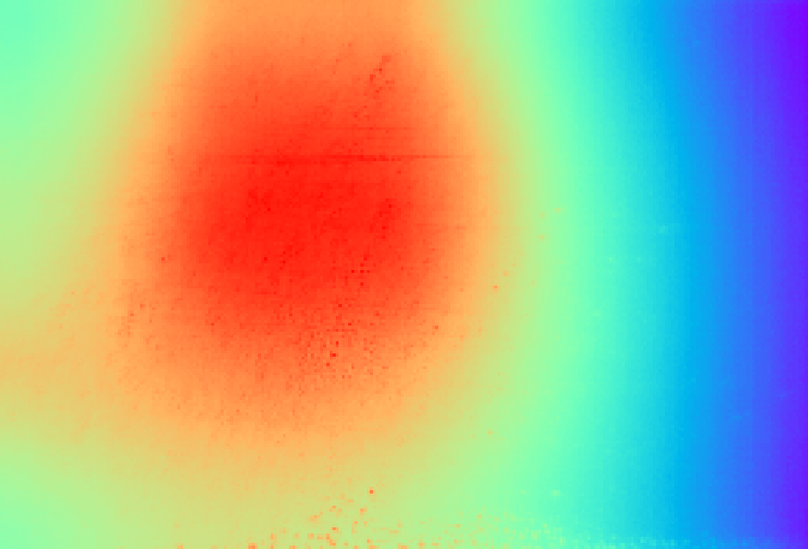
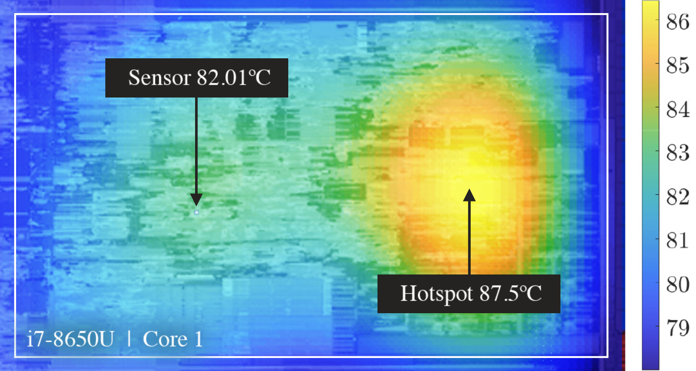
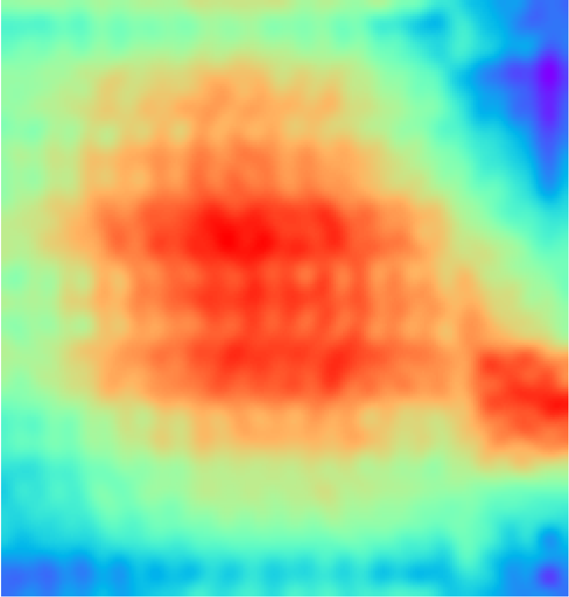

Commercial Processor Thermal Dataset
Thermal Map Dataset for Commercial CPU/GPU/TPU Multi/Many-Core Processors
Thermal-map datasets for training and evaluating machine learning models that predict the spatial temperature distribution of commercial processors from performance metrics, workload features, and time-series runtime signals.
We will continue to expand this database with additional platforms and workloads.
The data is stored as serialized Python objects and can be read with Python's pickle module. Each file contains a Python dictionary with two keys: "input" and "output". The "input" entry stores a 2D or 3D NumPy array containing performance metrics, workload descriptors, or other model inputs. The "output" entry stores a 3D array of thermal maps. The first dimension indexes the data point. For each data point, the input may be a feature vector or a time series, while the output is a 2D temperature map in degrees Celsius.
Because of GitHub file size limits, this repository includes representative samples. Complete datasets are available upon request.
References
Lu J, Tan S X, "Thermal Map Dataset for Commercial Multi/Many Core CPU/GPU/TPU", Proceedings of the 2024 ACM/IEEE International Symposium on Machine Learning for CAD, vol. 33, pp. 1–7, 2024. DOI: 10.1145/3670474.3685963. The paper can be downloaded here: Commercial Thermal Map Dataset.pdf
Related Project
AI-Empowered Thermal Modeling and Run-Time Management for Manycore Processor and Chiplet Designs
Intel i5-3337U & i7-8650U
Files starting with CPU_i5 and CPU_i7 contain data for the Intel i5-3337U and i7-8650U CPUs. Each file contains continuous recordings of CPU performance metrics and thermal maps collected under a specific workload. For each data point, the input is a feature vector and the output is a thermal map. To train a time-series model, stack performance-metric vectors from prior time points and use the corresponding thermal map as the prediction target.
Intel i5-3337U
| Parameter | Value |
|---|---|
| CPU cores / threads | 2C / 4T |
| Clock speed | 1.8 / 2.7 GHz (base / boost) |
| Process node | 22 nm (Ivy Bridge) |
| Peak performance | ~45 GFLOPS (FP64, est.) |
| TDP | 17 W |
Intel i7-8650U
| Parameter | Value |
|---|---|
| CPU cores / threads | 4C / 8T |
| Clock speed | 1.9 / 4.2 GHz (base / boost) |
| Process node | 14 nm (Kaby Lake-R) |
| Peak performance | ~200 GFLOPS (FP32, est.) |
| TDP | 15 W |

Fig. 1 — Thermal map of Intel i5-3337U
Fig. 2 — Thermal map of Intel i7-8650U

Fig. 3 — i7-8650U with temperatures at sensor and true hot spot
The video above shows the Intel i5-3337U thermal-map evolution during the FLAC workload, illustrating how the 2D temperature distribution changes over time.
The video above shows the same Intel i5-3337U FLAC workload as a 3D thermal surface, making the hot-spot intensity and spatial temperature gradients easier to inspect.
AMD Ryzen 7 4800U
CPU_R7_4800U.pkl contains data for the AMD Ryzen 7 4800U CPU. For each data point, the input is already organized as a time series and the output is the corresponding thermal map.
| Parameter | Value |
|---|---|
| CPU cores / threads | 8C / 16T (Zen 2) |
| Clock speed | 1.8 / 4.2 GHz (base / boost) |
| Process node | 7 nm |
| Peak performance | ~1 TFLOP (CPU FP32, est.) |
| TDP | 15 W |
The thermal map video above shows how hot spots move across cores over time.
The video above compares the thermal map with the resulting power-density map over time.
AMD Ryzen 7 7730U
CPU_R7_7730U.pkl contains data for the AMD Ryzen 7 7730U CPU and will be added to the public sample set when available. For each data point, the input is organized as a time series and the output is the corresponding thermal map.
| Parameter | Value |
|---|---|
| CPU cores / threads | 8C / 16T (Zen 3 refresh) |
| Clock speed | 2.0 / 4.5 GHz (base / boost) |
| Process node | 7 nm |
| Peak performance | ~1.2 TFLOPs (CPU FP32, est.) |
| TDP | 15 W |
The thermal map video above shows how hot spots move across cores over time.
AMD Ryzen AI 5 340
CPU_R_AI5_340.pkl contains data for the AMD Ryzen AI 5 340 and will be added to the public sample set when available. This Strix Point SoC combines a 4-core/8-thread Zen 5 CPU, an integrated GPU, and a dedicated NPU on a 4 nm process. Key specifications are listed below.
| Parameter | Value |
|---|---|
| CPU cores / threads | 4C / 8T (Zen 5) |
| Clock speed | ~3.0 / 4.0 GHz (base / boost, est.) |
| Process node | 4 nm (Zen 5, Strix Point) |
| NPU performance | ~50 TOPS |
| iGPU performance | ~5–6 TFLOPs (est.) |
| TDP | 28–45 W (configurable, CPU + GPU + NPU) |
The thermal map video above shows how hot spots move across cores over time for the AMD Ryzen AI 5 340.
The video above shows the power-density map derived from the thermal map.
NVIDIA GeForce RTX 4060
GPU_RTX_4060.pkl contains data for the NVIDIA GeForce RTX 4060 GPU. For each data point, the input is organized as a time series and the output is the corresponding thermal map.
| Parameter | Value |
|---|---|
| CUDA cores | ~3,072 |
| Clock speed | 1.83 / 2.46 GHz (base / boost) |
| Process node | 5 nm (Ada Lovelace) |
| Peak performance | ~15–24 TFLOPs (FP32) |
| TDP | 115 W (desktop) / 35–80 W (laptop) |
Fig. 4 — Thermal map of NVIDIA RTX 4060
Qualcomm SM6225 Snapdragon 680 4G
The Qualcomm SM6225 Snapdragon 680 4G data captures thermal-map and power-density behavior for a mobile SoC workload. Key specifications are listed below.
| Parameter | Value |
|---|---|
| CPU cores | 8C (4× Kryo 265 Gold / A73 + 4× Kryo 265 Silver / A53) |
| Clock speed | 2.4 GHz (A73) / 1.9 GHz (A53) |
| Process node | 6 nm (TSMC) |
| Peak performance | ~1 TOPS (Hexagon DSP) |
| TDP | ~6–8 W |
Thermal Map Evolution
The video below shows the temporal evolution of the thermal map for the Qualcomm SM6225 Snapdragon 680 4G SoC, illustrating how on-chip temperature distributions change during workload execution.
Thermal Map vs. Power-Density Map
The video below compares the initial thermal map with the derived power-density map over time. Distinct hot-spot regions show the relationship between localized power dissipation and temperature rise.
Enlarged View of Hot-Spot Regions
The video below shows an enlarged view of the thermal map alongside the corresponding power-density map, providing finer spatial resolution of hot-spot formation and evolution over time.
Google Coral M.2 TPU
TPU_Google_Edge.pkl contains data for the Google Coral M.2 TPU. Because the Edge TPU is a fixed-function accelerator, this dataset uses machine-learning workload features rather than real-time performance metrics to predict runtime steady-state temperature. For each data point, the input is a workload feature vector and the output is the steady-state thermal map.
| Parameter | Value |
|---|---|
| Architecture | 1× Edge TPU (ASIC) |
| Clock speed | N/A (fixed-function AI accelerator) |
| Process node | 28 nm (GlobalFoundries) |
| Peak performance | 4 TOPS (INT8) |
| TDP | ~2 W |

Fig. 5 — Thermal map of Google Coral M.2 TPU
Citing This Dataset
If you use this dataset in your research or project, please cite the following paper:
@inproceedings{mlcad2024commercialthermalmapdataset,
author={Jincong Lu and Sheldon X.-D. Tan},
title={Thermal Map Dataset for Commercial Multi/Many Core CPU/GPU/TPU},
booktitle={Proceedings of the 2024 ACM/IEEE International Symposium on Machine Learning for CAD},
series={MLCAD '24},
year={2024},
location={Salt Lake City, Utah},
url={https://dl.acm.org/doi/10.1145/3670474.3685963},
doi={10.1145/3670474.3685963},
publisher={ACM},
address={New York, NY, USA},
}